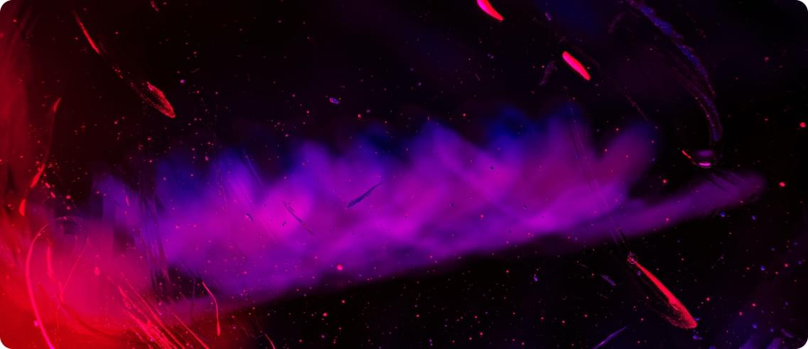

The Artefact — an unique generated art
The artefact is a platform that represents a new project in the field of NFT, namely a set of collectible tae tokens containing a unique generated art.
The project consists of 11,110 Art objects that incorporate music, painting, and technology recorded in NFT tokens on Ethereum. Each of the 11,110 artefacts embodies everyone: our culture and identity. The elements for the art objects were created by 732 musicians, artists and engineers from 124 countries around the world to capture our era from all possible perspectives.
The final artifacts were created by artificial intelligence to erase the boundaries between people and present an unbiased picture of the era. According to these artifacts, in the future, in millennia, our culture, social code and our thoughts will be recreated.
Why art?
Art is the true representation of reality. Neither chronicles, nor memoirs, nor archival reports, but art: music, painting, sculpture, prose are the mirror of the epoch, its deep Self.
Why blockchain?
History is being rewritten, people's lives are being erased from the memory of centuries or changed to meet the needs of the market. Blockchain gives us the right to write our real history in an immutable register and carry our truth and our reality through the millennia.
Why programmable art?
We are human beings, we are subject to passions and prejudices. Artificial intelligence-no. Artists and musicians from all over the world create pieces of our culture and artificial intelligence forms a picture of modernity from them without reference to nations, races, genders, genders and other things that can divide us. The code will write us all into history with an open mind.